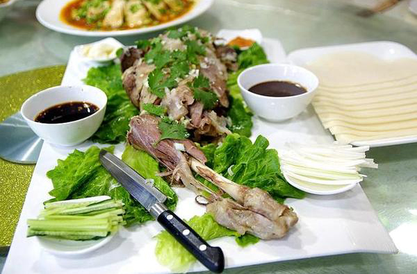
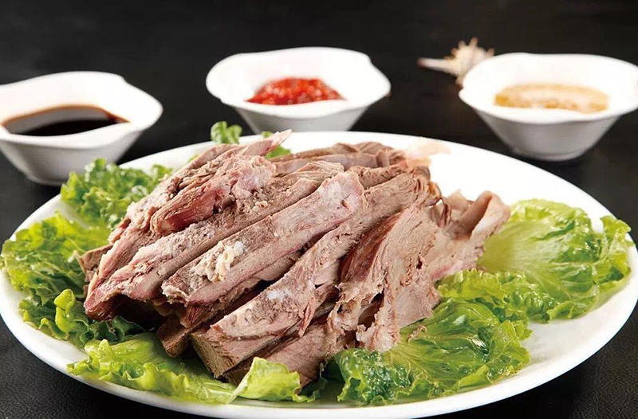
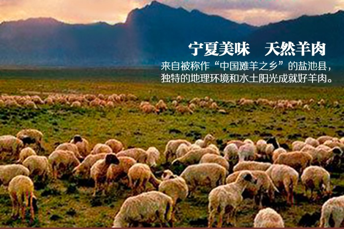
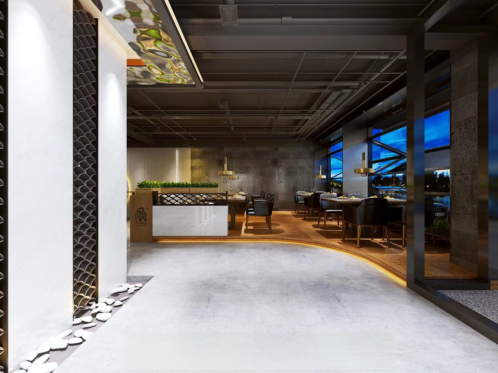
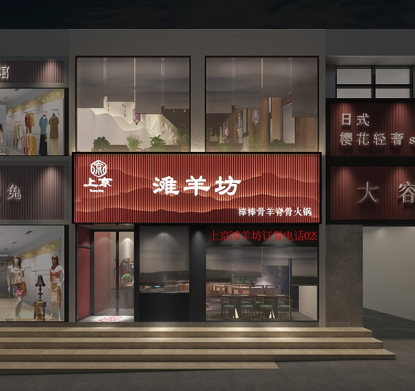
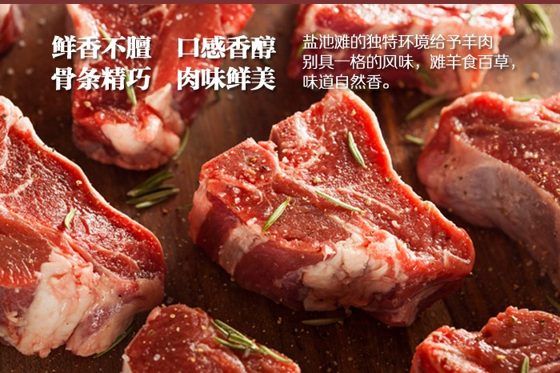
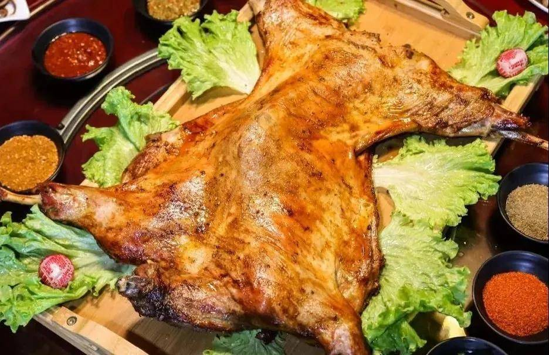
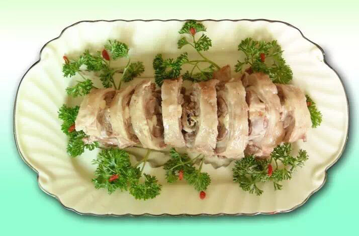

这里收录了我在探索宁夏滩羊过程中拍下的影像。一张旧单反、一双脚和一颗好奇心， 就是我的全部装备。照片不一定专业，但每一张都记录着真实的现场与感受。














拍摄心得
光线决定一切
在牧场拍摄，清晨6-8点的侧光最美。午后的食物拍摄，散射的自然光胜过任何补光灯。
先交朋友再拍照
在餐厅和牧场，我总是先聊天，让对方放松。照片里的人神情自然，才是真正的记录。
细节比全景更有力
一块羊肉的纹理、一只手的动作、一碗汤的热气——这些局部往往比全景更能传达感受。